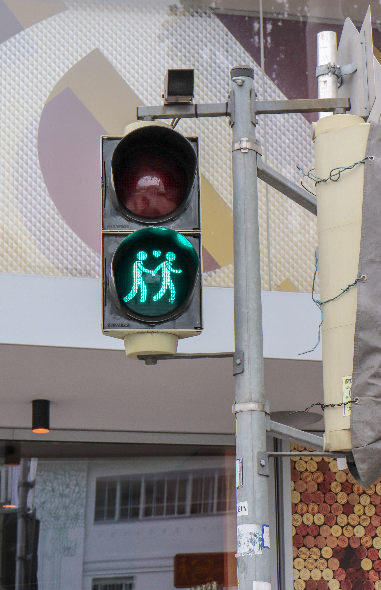

안녕 내 이름은 박원준이야.처음으로 코딩 공부를 시작해봤어.
앞으로 내 인생이 어떤방식으로 흘러갈지 모르겠지만 열심히 해서 꼭 내 미래를 빛나게 할꺼야 화이팅 하자!!! 아자아자!!!

바탕화면에 파일 생성 이름은 web 으로 할꺼임. 이 파일에 코딩파일넣을것이다.
2. File 카테코리에 open folder 선택해서 web 파일 선택
3. 생성된 web 파일에 new file 선택 1.html 이라고 함
4. 여기서 웹페이지의 확장자가 html 이다 . 즉 1이라는 이름의 웹을 만드는 것
5. 우리가 인터넷 주소창에 주소를 치고 들어가는 것은 남 컴퓨터 페이지 보기위한 루트임
내가 만든 페이지는 window기준 ctrl+o 키 누르면 된다